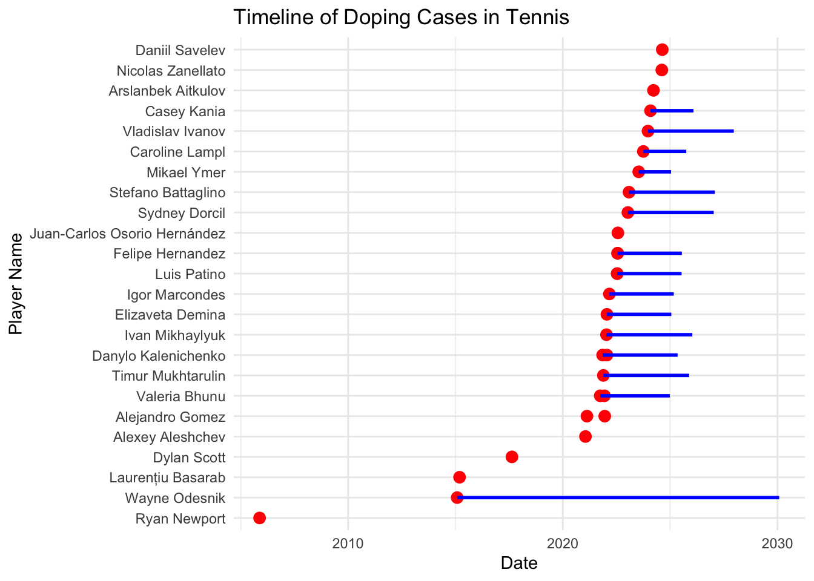

## # A tibble: 6 × 7
## player_name program sanction start_date end_date sanction_type time_frame
## <chr> <chr> <chr> <date> <date> <chr> <chr>
## 1 Valeria Bhunu TADP 3 years… 2021-09-29 2024-12-28 Ban 3 years
## 2 Mikael Ymer TADP 18 mont… 2023-07-16 2025-01-17 Suspension 18 months
## 3 Elizaveta Dem… TADP Three y… 2022-01-21 2025-01-21 Ban 3 years
## 4 Igor Marcondes TADP 3 years… 2022-03-04 2025-03-04 Ban 3 years
## 5 Danylo Kaleni… TADP 3 years… 2021-11-09 2025-05-08 Ban 3 years a…
## 6 Luis Patino TADP Three y… 2022-07-15 2025-07-14 Suspension 3 yearsurl <- "https://en.wikipedia.org/wiki/Category:Doping_cases_in_tennis"
page <- read_html(url)
# Extract the list of players
players <- page %>%
html_nodes(".mw-category-group li a") %>%
html_text()
wiki_doping<- data.frame(player_name = players)
head(wiki_doping)## player_name
## 1 Maximilian Abel
## 2 Franco Agamenone
## 3 Andre Agassi
## 4 Khrystyna Antoniichuk
## 5 Kateryna Baindl
## 6 Nikola Bartůňková# Combine and clean doping data
doping_data <- full_join(wiki_doping, itia_sanctions) %>%
distinct() %>%
mutate(sanction_start = as.Date(start_date),
sanction_end = as.Date(end_date))## Joining with `by = join_by(player_name)`tennis_data <- read_csv("data/cleaned_df_webscraping_data_added.csv")## Rows: 5461 Columns: 43
## ── Column specification ────────────────────────────────────────────────────────
## Delimiter: ","
## chr (11): tourney_name, winner_entry, winner_name, winner_hand, winner_ioc,...
## dbl (31): winner_id, winner_seed, winner_ht, winner_age, loser_id, loser_se...
## date (1): tourney_date
##
## ℹ Use `spec()` to retrieve the full column specification for this data.
## ℹ Specify the column types or set `show_col_types = FALSE` to quiet this message.# Extract unique player names from the cleaned tennis data
tennis_players <- unique(c(tennis_data$winner_name, tennis_data$loser_name))
# Filter the doping data to include only players who appear in the cleaned tennis data
filtered_doping_data <- doping_data %>%
filter(player_name %in% tennis_players)
# Use this filtered doping data to merge with the cleaned tennis data
merged_data <- tennis_data %>%
left_join(doping_data, by = c("winner_name" = "player_name")) %>%
rename(winner_doping_start = start_date,
winner_doping_end = end_date,
winner_sanction = sanction) %>%
left_join(doping_data, by = c("loser_name" = "player_name")) %>%
rename(loser_doping_start = start_date,
loser_doping_end = end_date,
loser_sanction = sanction)
# Remove rows where there's no doping data for either player
final_data <- merged_data %>%
filter(!is.na(winner_doping_start) | !is.na(loser_doping_start))# Filter matches where either winner or loser is in the doping dataset
doping_matches <- final_data %>%
filter(winner_name %in% doping_data$player_name | loser_name %in% doping_data$player_name)
# Add a flag to indicate if a player is in the doping dataset
all_player_performance <- final_data %>%
pivot_longer(cols = c(winner_name, loser_name), names_to = "role", values_to = "player_name") %>%
group_by(player_name) %>%
reframe(matches_total = n(),
wins = sum(role == "winner_name"),
losses = sum(role == "loser_name"),
win_rate = wins / matches_total,
in_doping_dataset = player_name %in% doping_data$player_name) %>%
distinct()
pre_sanction_performance <- final_data %>%
filter((winner_name == "Mikael Ymer" | loser_name == "Mikael Ymer") &
tourney_date < as.Date("2023-07-18")) %>%
summarize(matches_played = n(),
wins = sum(winner_name == "Mikael Ymer"),
win_rate = wins / matches_played)
ymer_career_performance <- final_data %>%
filter(winner_name == "Mikael Ymer" | loser_name == "Mikael Ymer") %>%
summarize(matches_played = n(),
wins = sum(winner_name == "Mikael Ymer"),
win_rate = wins / matches_played)
ymer_performance_over_time <- final_data %>%
filter(winner_name == "Mikael Ymer" | loser_name == "Mikael Ymer") %>%
mutate(won = winner_name == "Mikael Ymer") %>%
arrange(tourney_date) %>%
mutate(cumulative_win_rate = cummean(won))
ggplot(ymer_performance_over_time, aes(x = tourney_date, y = cumulative_win_rate)) +
geom_line() +
geom_vline(xintercept = as.Date("2023-07-18"), color = "red", linetype = "dashed") +
labs(title = "Mikael Ymer's Cumulative Win Rate Over Time",
x = "Date",
y = "Cumulative Win Rate",
caption = "Red dashed line indicates start of sanction") +
theme_minimal()# Prepare data for timeline
timeline_data <- doping_data %>%
filter(!is.na(start_date)) %>%
arrange(start_date)
# Timeline plot
ggplot(timeline_data, aes(x = start_date, y = reorder(player_name, start_date))) +
geom_point(color = "red", size = 3) +
geom_segment(aes(xend = end_date, yend = player_name), color = "blue", size = 1) +
labs(title = "Timeline of Doping Cases in Tennis",
x = "Date",
y = "Player Name") +
theme_minimal()## Warning: Using `size` aesthetic for lines was deprecated in ggplot2 3.4.0.
## ℹ Please use `linewidth` instead.
## This warning is displayed once every 8 hours.
## Call `lifecycle::last_lifecycle_warnings()` to see where this warning was
## generated.## Warning: Removed 14 rows containing missing values or values outside the scale range
## (`geom_segment()`).
# Calculate sanction durations
sanction_analysis <- doping_data %>%
mutate(sanction_duration_days = as.numeric(end_date - start_date)) %>%
filter(!is.na(sanction_duration_days))
# Visualize sanction durations
ggplot(sanction_analysis, aes(x = reorder(player_name, -sanction_duration_days), y = sanction_duration_days)) +
geom_bar(stat = "identity", fill = "steelblue") +
coord_flip() +
labs(title = "Sanction Durations for Doping Cases",
x = "Player Name",
y = "Duration (Days)") +
theme_minimal()# Prepare data for mapping
ioc_country_mapping <- c(
"USA" = "United States",
"GBR" = "United Kingdom",
"FRA" = "France",
"ESP" = "Spain",
"ITA" = "Italy",
"GER" = "Germany",
"AUS" = "Australia",
"JPN" = "Japan",
"CHN" = "China",
"RUS" = "Russia",
"SRB" = "Serbia",
"SWE" = "Sweden",
"SVK" = "Slovakia")
country_data <- merged_data %>%
filter(winner_name %in% doping_data$player_name | loser_name %in% doping_data$player_name) %>%
mutate(winner_doping = winner_name %in% doping_data$player_name,
loser_doping = loser_name %in% doping_data$player_name) %>%
pivot_longer(cols = c(winner_ioc, loser_ioc),
names_to = "player_type",
values_to = "ioc") %>%
filter((player_type == "winner_ioc" & winner_doping) | (player_type == "loser_ioc" & loser_doping)) %>%
mutate(country = ioc_country_mapping[ioc]) %>%
group_by(country) %>%
summarize(cases_count = n_distinct(case_when(
player_type == "winner_ioc" ~ winner_name,
player_type == "loser_ioc" ~ loser_name
)))
# Join with world map data
world_map <- map_data("world")
map_data <- world_map %>%
left_join(country_data, by = c("region" = "country"))
# Plot world map with doping cases
ggplot(map_data, aes(long, lat, group = group)) +
geom_polygon(aes(fill = cases_count), color = "white") +
scale_fill_gradient(low = "lightblue", high = "red", na.value = "gray") +
labs(title = "Geographic Distribution of Doping Cases in Tennis",
fill = "# of Cases") +
theme_void()